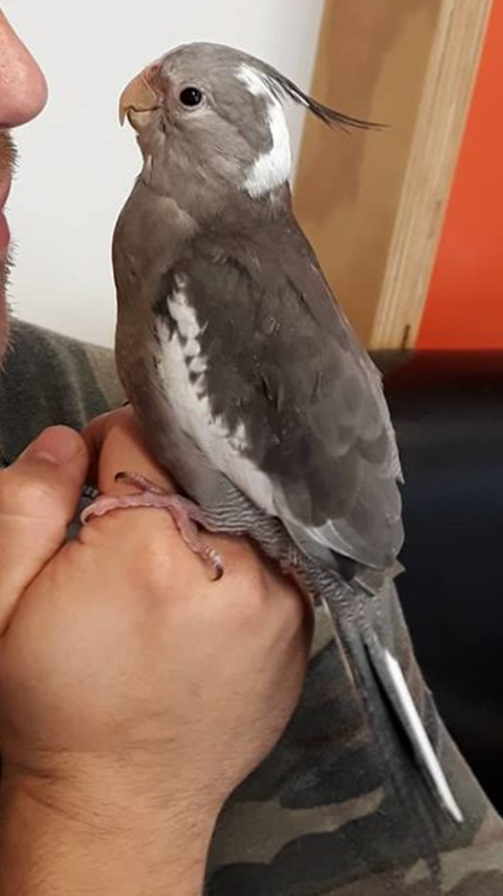
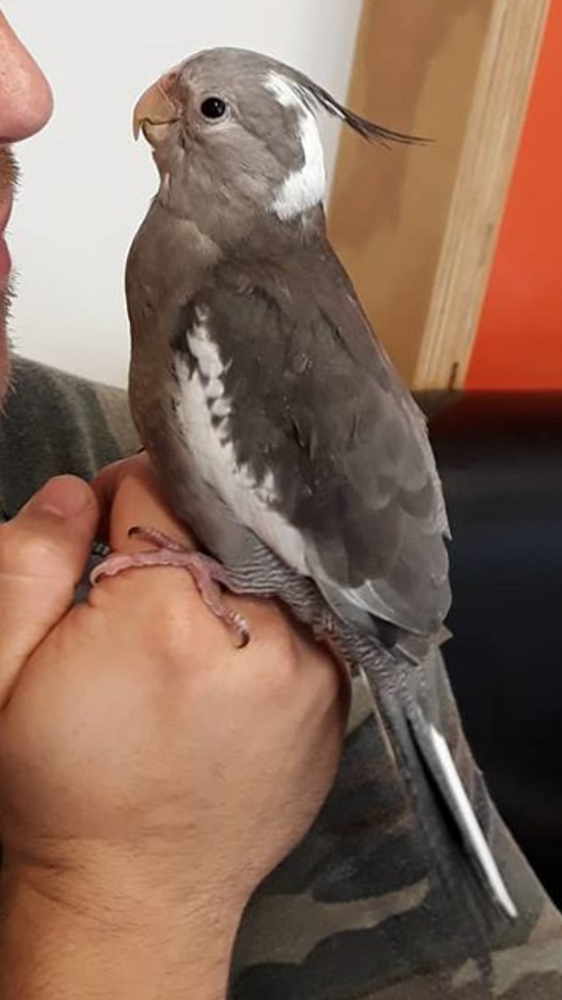

My name is Madison, but I go by Maddy for short. I'm 14 and My birthday is on April 1st I go to Saint Kentigern College. The schools that I used to go to are Hillsborough Primary School and Saint Kentigern Girls school. One of my hobbies is playing guitar, ukulele and some other instruments. As well as playing music, I like listening to it. I also enjoy taking care of animals, I have over 20 of them. I have 3 cockateils named Blanco, Cosmo and Pearl, and a dog called Zi. I spend most of my free time doing literally nothing.
 

Zi, my dog and Blanco, one of my cockateils